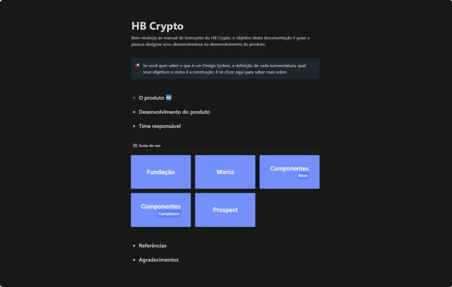

Uma base compartilhada para interfaces consistentes
Estruturação de componentes, tokens e documentação para conectar o trabalho de design e desenvolvimento de um produto de gestão de criptoativos. Uma base comum, preparada para receber a identidade de diferentes marcas.

Manual HB Crypto: fundações, marca, componentes e orientações de personalização para design e desenvolvimento.
Neste case
01
Projeto em um minuto
O problema
O produto white label precisava receber diferentes marcas sem perder consistência. Referências dispersas e inconsistências de interface dificultavam a construção dessa base comum.
Minha contribuição
Construção do Design System, manutenção de componentes, otimização e documentação, em colaboração com design e engenharia.
A entrega
Fundações, tokens de marca e orientações para componentes, reunidos em um manual com fluxo de personalização white label.
02
Contexto da atuação
Empresa
Nelogica
Atuação
Product Designer · UX/UI
Colaboração
Desenvolvedores, PO e liderança de UX na definição e evolução do sistema.
Contexto do produto
Novo produto de gestão de criptoativos em construção durante o projeto.
03
O desafio
Durante o desenvolvimento de um produto de gestão de criptoativos, observei inconsistências nos artefatos de interface e a oportunidade de estruturar um Design System desde a base.
Conversei com desenvolvedores, o PO e a liderança de UX para alinhar a iniciativa. O objetivo era organizar referências comuns e melhorar a comunicação técnica, aproveitando o que já existia nos guias de design e no código.
04
Decisões de design
Auditar e reaproveitar antes de definir
Por que essa decisão
Existiam guias de estilo e elementos reutilizados pelos desenvolvedores e designers, mas sem um padrão definido.
Como apliquei
Mapeei cores, tipografia, espaçamentos, botões e modais para orientar a base do novo produto. A documentação adotou simplicidade e responsividade como princípios.
Estudar as cores antes de consolidar a paleta
Por que essa decisão
A interface precisava funcionar em temas claro e escuro e preservar a leitura de compra, venda e variações dos ativos.
Como apliquei
Comparei alternativas de cores nos dois temas e revisei escolhas com problemas de visibilidade, incluindo o amarelo. Esse material registra a exploração que orientou as definições visuais.
Estudo exploratório de cores em temas claro e escuro. Comparação de alternativas para identificar problemas de visibilidade antes de consolidar a paleta.
Ampliar imagem
⤢
Separar estrutura comum e identidade de marca
Por que essa decisão
O modelo white label exigia personalização sem alterar as regras estruturais do produto.
Como apliquei
Organizei as definições em Fundação e Marca: espaçamento, arredondamento e breakpoints na base comum; tipografia e cores na camada de marca, respeitando as possibilidades acordadas com cada contratante.
Transformar decisões em orientações de uso
Por que essa decisão
Designers e desenvolvedores precisavam saber como aplicar e manter o sistema.
Como apliquei
Documentei regras, exemplos e cuidados de uso no Notion e mantive alinhamentos com a equipe. O manual também orienta a personalização de marca no Figma e a entrega para desenvolvimento.
Alinhamentos entre design e desenvolvimento fizeram parte da evolução do sistema.
Ampliar imagem
⤢
05
O sistema documentado
O manual HB Crypto conecta definições visuais, regras de uso e personalização. A organização permite consultar tanto a base do sistema quanto sua aplicação no produto.
Fundação
Tipografia, espaçamentos, arredondamento, opacidade, sombras, breakpoints e cores de compra/venda.
Marca
Fontes, pesos, cores de marca, neutros, gradientes e estados para a identidade da empresa contratante.
Componentes
Estados e usos de componentes base; composição de ferramentas de mercado, como boleta e lista de ordens, a partir dessa base.
Personalização white label
Orientações para estudar a marca, atualizar tokens e biblioteca no Figma e preparar a entrega para desenvolvimento.
Manual HB Crypto: fundações, marca, componentes e orientações de personalização para design e desenvolvimento.
Ampliar imagem
⤢
Regras que ajudam na aplicação
Estados além da aparência
Os botões têm estados default, hover, focus, active e disabled documentados. O foco explicita a necessidade de apoiar a navegação por teclado.
Cores com significado
Cores de compra/venda e variações dos ativos têm aplicação prevista em listas, ordens e livro de ofertas.
Personalização com continuidade
O fluxo de prospect orienta reunir a identidade da marca, atualizar a biblioteca e entregar telas, protótipo e tokens à engenharia.